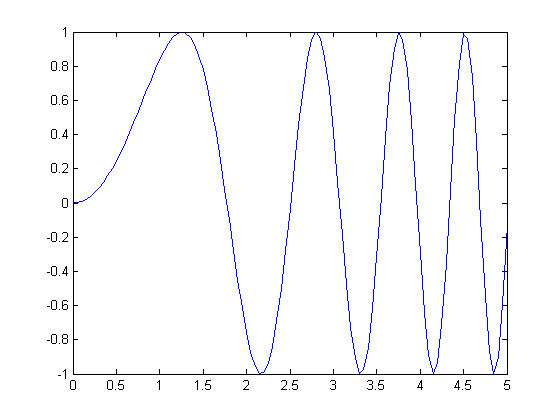
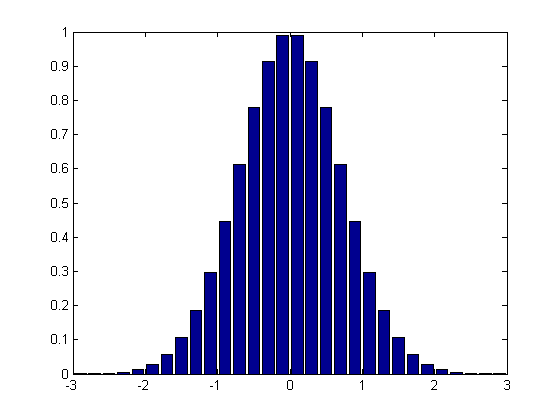
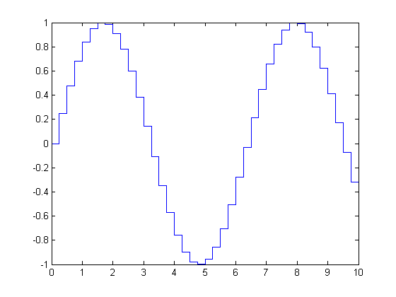
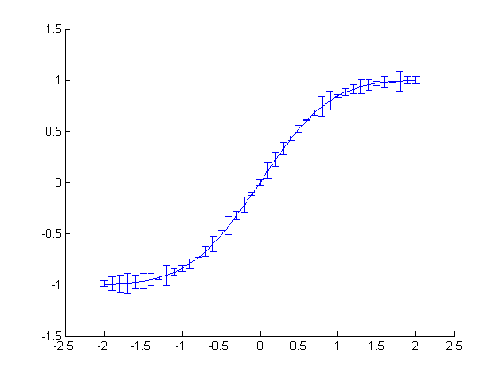
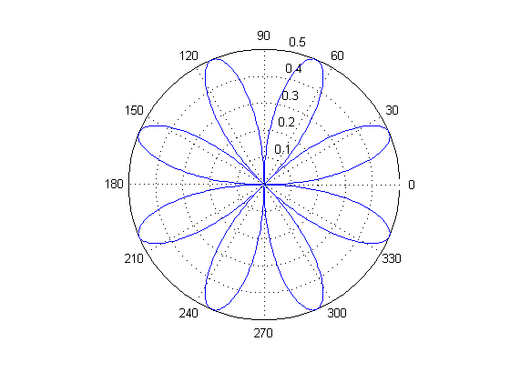
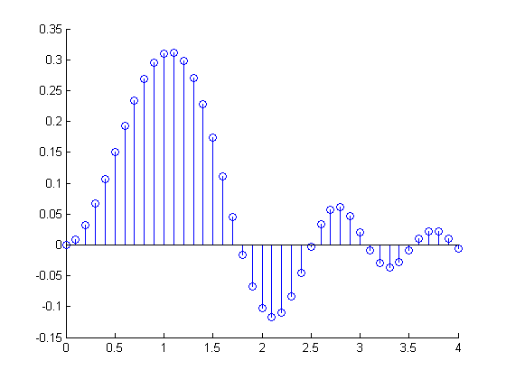

Here are some examples of 2-D line plots in MATLAB.
x=0:0.05:5; y=sin(x.^2); plot(x,y);
x = -2.9:0.2:2.9; bar(x,exp(-x.*x));
x=0:0.25:10; stairs(x,sin(x));
x=-2:0.1:2; y=erf(x); e = rand(size(x))/10; errorbar(x,y,e);
t=0:.01:2*pi; polar(t,abs(sin(2*t).*cos(2*t)));
x = 0:0.1:4; y = sin(x.^2).*exp(-x); stem(x,y)